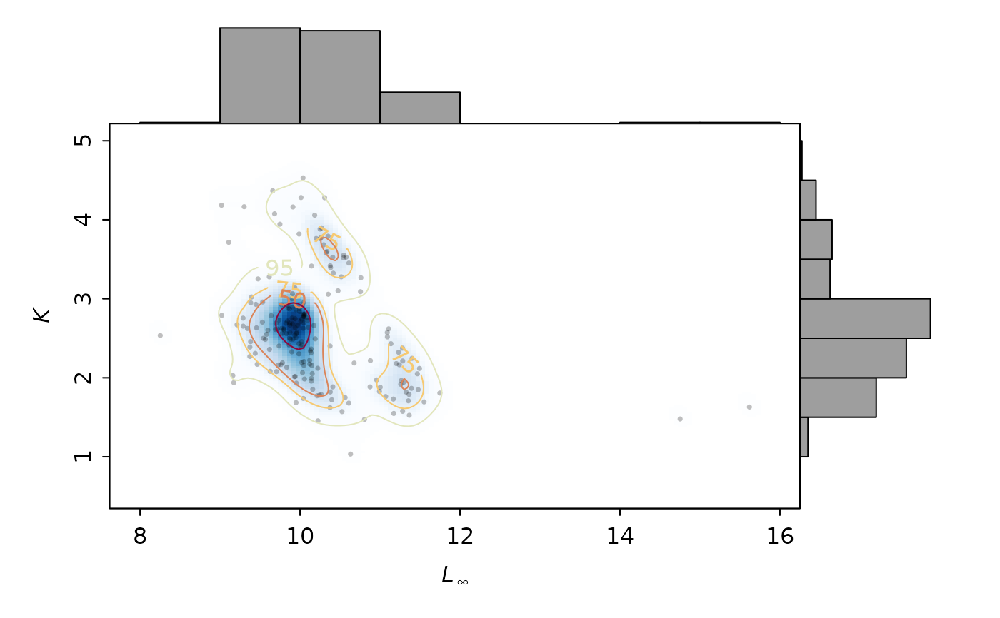
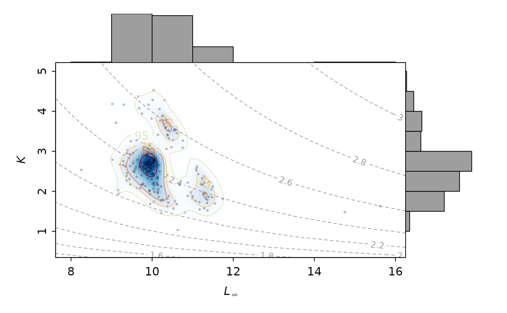

Plots the bootstrapped estimates of Linf and K (ELEFAN_GA_boot, ELEFAN_SA_boot) with their bivariate kernel density and marginal histograms.
Usage
LinfK_scatterhist(
res,
Linf.breaks = "Sturges",
K.breaks = "Sturges",
gridsize = 151,
H = ks::Hpi(res[, c("Linf", "K")]),
shading = TRUE,
shading.cols = colorRampPalette(c("white", blues9))(50),
dens.contour = TRUE,
probs = c(25, 50, 75, 95),
phi.contour = FALSE,
phi.levels = NULL,
phi.contour.col = 8,
phi.contour.lty = 2,
phi.contour.lwd = 1,
phi.contour.labcex = 0.75,
pt.pch = 16,
pt.col = rgb(0, 0, 0, 0.25),
pt.cex = 0.5,
pt.bg = 4,
xlab = expression(italic("L")[infinity]),
ylab = expression(italic("K")),
xlim = NULL,
ylim = NULL
)Arguments
- res
list of class `lfqBoot`
- Linf.breaks
vector. Breaks for Linf histogram.
- K.breaks
vector. Breaks for K histogram.
- gridsize
vector. 2 values for defining the resolution of the grid
- H
object from
Hpi(Default: `ks::Hpi(res$bootRaw[,c("Linf", "K")])`)- shading
logical. Should 2d field of density estimates be colored with colors specified by `shading.cols` argument (Default: `shading = TRUE`).
- shading.cols
vector. Colors for background shading of 2d field of density estimates (Default: `shading.cols = colorRampPalette(c("white", blues9))(50)`).
- dens.contour
logical. Should contour lines be added (Default: `dens.contour = TRUE`)
- probs
vector. Density probability cutoffs to be plotted by contours when `dens.contour = TRUE` (Default: `probs = c(25,50,75,95)`).
- phi.contour
logical. Should phi prime isolines be displayed (Default: `phi.contour = FALSE`)
- phi.levels
vector. Phi prime values to display when `phi.contour = TRUE` (Default: `phi.levels = NULL`). When not defined (`phi.levels = NULL`), the default levels are chosen automatically by the
contourfunction.- phi.contour.col
vector. Color to use for phi prime contours. Passed to
contour.- phi.contour.lty
vector. Line type to use for phi prime contours. Passed to
contour.- phi.contour.lwd
vector. Line width to use for phi prime contours. Passed to
contour.- phi.contour.labcex
vector. Labels for the contour lines. Passed to
contour.- pt.pch
pch value to use for resampling points
- pt.col
color to use for resampling points
- pt.cex
size value to use for resampling points
- pt.bg
background color to use for resampling points
- xlab
label for x-axis
- ylab
lavel for y axis
- xlim
limits for x-axis
- ylim
limits for y-axis
Examples
data(alba_boot)
LinfK_scatterhist(alba_boot)

LinfK_scatterhist(alba_boot, phi.contour = TRUE)
